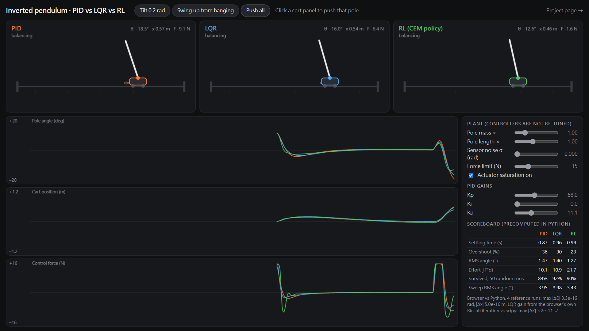
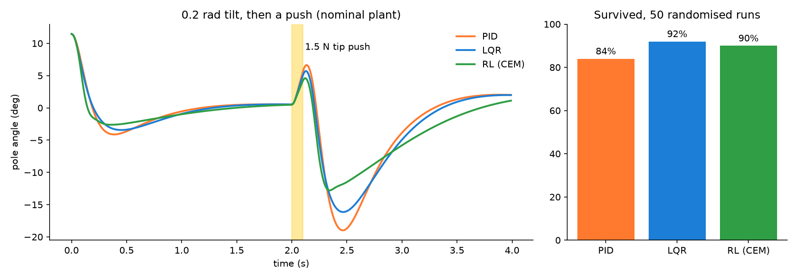

Live comparison · 即時比較
Click a panel to push that pole, swing all three up from hanging, or make the pole three times heavier and see which controller still holds it. The controllers keep their nominal gains when you change the plant.

24-second demo · 24 秒示範
Rendered frame by frame from the live page itself, with the same tilt, the same push, a heavier pole and a swing-up.
Results · 結果

| PID | LQR | RL (CEM) | |
| Settling time, 0.2 rad tilt (to ±0.02 rad) | 0.87 s | 0.96 s | 0.94 s |
| Overshoot past upright | 36 % | 30 % | 23 % |
| RMS angle, 8 s | 1.47° | 1.40° | 1.27° |
| Control effort ∫F² dt | 10.1 N²·s | 10.9 N²·s | 21.7 N²·s |
| Survived, 50 randomised runs | 84 % | 92 % | 90 % |
| RMS angle of survivors | 3.95° | 3.98° | 3.43° |
The randomised runs use pole mass ×0.5–3, length ×0.6–1.6, start tilt ±0.25 rad, sensor noise σ = 0.01 rad and a 1–2.5 N tip push for 0.1 s at t = 2 s. A run fails if the pole passes 0.8 rad or the cart leaves the ±1.2 m rail. All three controllers get identical scenarios and identical noise sequences.
LQR survives the most runs. The learned policy holds the pole closest to upright but spends about twice the control effort. PID with a cart-position loop is cheapest on effort and loses the most runs when the pole gets heavy and long. Full numbers: results.json.
Method · 方法
| Plant | Cart 1.0 kg, uniform pole 0.25 kg × 0.6 m, cart friction 0.2 N·s/m, pivot friction 0.003 N·m·s, force limit ±15 N, rail ±1.2 m. Lagrange equations: (M+m)ẍ + ml cosθ θ̈ − ml sinθ θ̇² = F − bẋ + Fd ml cosθ ẍ + (J+ml²) θ̈ − mgl sinθ = −cθ̇ + 2l cosθ Fd (θ = 0 upright, J = m(2l)²/12, Fd = push at the tip). RK4, 2 substeps per 10 ms control period. |
|---|---|
| Sensing | Every controller sees noisy angle and cart position at 100 Hz; velocities come from a filtered finite difference, as with real encoders. |
| PID | F = Kpθ + Ki∫θ + Kdθ̇ + Kxx + Kvẋ. Gains found by Nelder–Mead on the nominal plant: Kp 68.0, Kd 11.1, Kx 10.7, Kv 11.5. Ki settles at 0 because the plant has no constant bias; the slider lets you add it. |
| LQR | Linearised about upright, discretised with zero-order hold, discrete Riccati equation (scipy) with Q = diag(10, 1, 100, 1), R = 0.05: K = [−12.6, −14.3, −83.1, −14.7]. The live page re-derives K with its own Riccati iteration and matches scipy to 5×10⁻¹¹. |
| RL | 4-16-1 tanh MLP, trained with the cross-entropy method (64 candidates, 8 elites, 120 generations, 5.4 CPU-minutes). Training used domain randomisation (pole mass ×0.5–2, length ×0.7–1.5, noise, pushes). Weights run in the browser as plain JavaScript. |
| Swing-up | Shared energy-pumping law, a = sat(k·E·sign(θ̇ cosθ)) with cart centring, then a hand-off to the balance controller once |θ| < 0.35 rad. It is tuned for the nominal pole and can fail to reach the top for much shorter poles. |
| Cross-check | The browser simulator is a line-for-line port of the Python one and shares its noise generator. On load it replays four Python reference runs and reports the largest difference: 3×10⁻¹⁶ rad. |